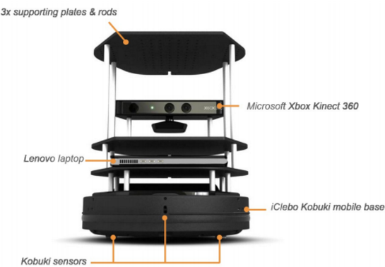
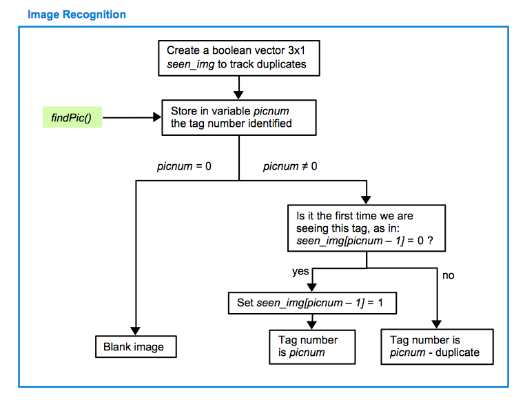
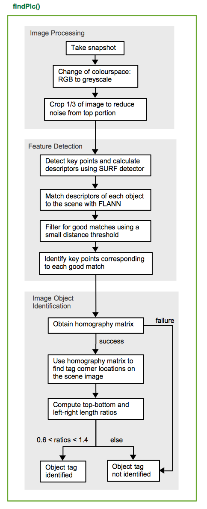
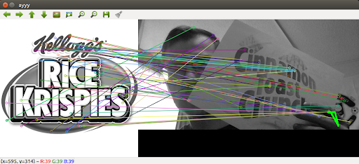
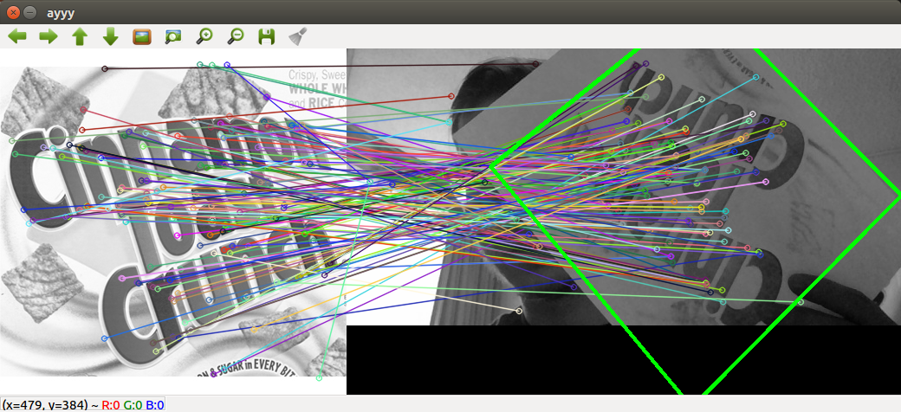

Computer Vision
This purpose of this project is to work with a team of 5 to control a turtlebot using ROS (Robot Operating System). The goal is for the turtlebot to find various cereal boxes in a maze and correctly identify which cereal box was found at each location. The turtlebot that was used can be seen in the picture on the left.
My role in this project was to write, test and implement the OpenCV code for the turtlebot. I was responsible for designing the algorithm, which required some iterative testing and research before it became successful.

The flow charts show the final algorithm that was developed. FindPic is the code that is called to identify the image. It splits up the program into 3 steps. First is image processing, where the image is made greyscale and the image is cropped (based on trial and error and only works for turtlebots, given their height and the height of the cereal box). The next step is feature detection which is accomplished using SURF detector and matched with stored images using FLANN. Finally, the image identification is completed by creating a homography matrix from the features. If an appropriate rectangle is made when comparing the features in the stored image and real time image, success! We have a match and we can now store this match location as a specific cereal box.
A failure and a success for the image recognition software is shown below.


The code is shown below.
OpenCV Code
//::::::::::::::::::::::::::::::::IMAGE PROCESSING BASE CODE::::::::::::::::::::::::::::::::
#include "func_header.h"
#include <stdio.h>
#include <stdlib.h>
#include <vector>
#include <iostream>
#include "opencv2/core.hpp"
#include "opencv2/imgproc.hpp"
#include "opencv2/features2d.hpp"
#include "opencv2/highgui.hpp"
#include "opencv2/calib3d.hpp"
#include "opencv2/xfeatures2d.hpp"
#include <algorithm>
#include <cv.h>
#include <highgui.h>
using namespace cv;
using namespace cv::xfeatures2d;
int findPic(imageTransporter &imgTransport, vector<cv::Mat> imgs_track){
//imgs_track is already grayscale
cv::namedWindow("view");
int foundPic = 0;
cv::Mat video;
cout <<"before if empty"<< endl;
video = imgTransport.getImg(); //scene image
if(!video.empty()){
//fill with your code
cout <<"entered if empty"<< endl;
cv::Mat gray_video;
//try cropping gray video
cvtColor(video, gray_video, CV_BGR2GRAY);
cv::Mat gray_videocrop = gray_video(Range(gray_video.rows/3, gray_video.rows),
Range::all());
double min_of_min = 100; //the smallest minimum distance computed
std::vector<vector<DMatch > > matches(3);
//cv::Mat descriptors_object, descriptors_scene;
std::vector<Mat> descriptors_object(3), descriptors_scene(3);
std::vector<vector<KeyPoint> > keypoints_object(3), keypoints_scene(3);
//get smallest minimum distance of all tags
for(int i=0; i<imgs_track.size(); i++){
//-- Step 1 & 2: Detect the keypoints and calculate descriptors using
SURF Detector
cout <<"entered for loop"<< endl;
int minHessian = 400;
Ptr<SURF> detector = SURF::create(minHessian);
detector->detectAndCompute(imgs_track[i], Mat(), keypoints_object[i],
descriptors_object[i]);
detector->detectAndCompute(gray_videocrop, Mat(), keypoints_scene[i],
descriptors_scene[i]);
//cout << matches.size() << endl;
//-- Step 3: Matching descriptor vectors using FLANN matcher
FlannBasedMatcher matcher;
matcher.match( descriptors_object[i], descriptors_scene[i], matches[i] );
//cout <<"after match"<< endl;
double max_dist = 0;
double min_dist = 100;
//-- Quick calculation of max and min distances between keypoints
for( int j = 0; j < descriptors_object[i].rows; j++ ){
double dist = matches[i][j].distance;
if( dist < min_dist ){
min_dist = dist;}
if( dist > max_dist ){
max_dist = dist;}
}
cout << i << ": min " << min_dist << endl ;
if(min_of_min > min_dist){
min_of_min = min_dist;
}
}
cout << ": min min " << min_of_min << endl ;
//cout <<"after distance calc"<< endl;
//Find the image with the greatest number of good matches/inliers
std::vector<vector< DMatch > > good_matches(3);
for(int i=0; i<imgs_track.size(); i++){
cout << "matches vector : " << matches[i].size() << endl;
for( int j = 0; j < descriptors_object[i].rows; j++ ){
//cout << " arg1: " << matches[i][j].distance << " arg2 : "<<
1.5*min_of_min << endl;
double dist = matches[i][j].distance;
if( abs(dist) < 3.0*min_of_min) //**********// && dist >=0.0
{ good_matches[i].push_back( matches[i][j]);
if (i==0){
//cout << " arg1: " << matches[i][j].distance << " arg2 : "<<
3*min_of_min << endl;
}
}
}
}
std::vector<Mat> img_matches(3);
for(int i=0; i<imgs_track.size(); i++){
drawMatches( imgs_track[i] , keypoints_object[i], gray_videocrop,
keypoints_scene[i],
good_matches[i], img_matches[i], Scalar::all(-1), Scalar::all(-1),
vector<char>(), DrawMatchesFlags::NOT_DRAW_SINGLE_POINTS );
imshow("ayyy", img_matches[i]);
//waitKey(0);
}
std::vector<vector<Point2f> > obj(3);
std::vector<vector<Point2f> > scene(3);
std::vector<Mat> H(3);
for(int i=0; i<imgs_track.size(); i++){
for( int j = 0; j < good_matches[i].size(); j++ ){
//-- Get the keypoints from the good matches
obj[i].push_back( keypoints_object[i][ good_matches[i][j].queryIdx ].pt );
scene[i].push_back( keypoints_scene[i][ good_matches[i][j].trainIdx ].pt );
}
if( obj[i].size() >=4 && scene[i].size() >=4){
H[i] = findHomography( obj[i], scene[i], CV_RANSAC );
}
}
std::vector<vector<Point2f> > obj_corners(3, vector<Point2f>(4));
for(int i=0; i<imgs_track.size(); i++){
obj_corners[i][0] = cvPoint(0,0); //top left
obj_corners[i][1] = cvPoint( imgs_track[i].cols, 0 ); //top right
obj_corners[i][2] = cvPoint( imgs_track[i].cols, imgs_track[i].rows ); //bottom
right
obj_corners[i][3] = cvPoint( 0, imgs_track[i].rows ); //bottom left
}
std::vector<Point2f> scene_corners(4);
std::vector<float> img_error_values(3, 100.0);
std::vector<float> top_ratio(3, 0);
std::vector<float> side_ratio(3, 0);
cout << top_ratio[1] << endl;
double pixel_error = 12.0; //play with this number
//if a transformation matrix exists, compare distance of opposite sides of scene image
corners. Tag corres
for(int i=0; i<imgs_track.size(); i++){
if(!H[i].empty()){
perspectiveTransform( obj_corners[i], scene_corners, H[i]);
/*cout << "Scene 0 : " << scene_corners[0] << endl;
cout << "Scene 1 : " << scene_corners[1] << endl;
cout << "Scene 2 : " << scene_corners[2] << endl;
cout << "Scene 3 : " << scene_corners[3] << endl;*/
top_ratio[i] = sqrt((scene_corners[1].x-scene_corners[0].x)*(scene_corners[1].x-scene_corners[0].x) +(scene_corners[1].y-scene_corners[0].y)*(scene_corners[1].y-scene_corners[0].y))/sqrt((scene_corners[3].x-scene_corners[2].x)*(scene_corners[3].x-scene_corners[2].x) +(scene_corners[3].y-scene_corners[2].y)*(scene_corners[3].y-scene_corners[2].y)) ;
side_ratio[i] = sqrt((scene_corners[3].x-scene_corners[0].x)*(scene_corners[3].x-scene_corners[0].x) +(scene_corners[3].y-scene_corners[0].y)*(scene_corners[3].y-scene_corners[0].y))/sqrt((scene_corners[2].x-scene_corners[1].x)*(scene_corners[2].x-scene_corners[1].x) +(scene_corners[2].y-scene_corners[1].y)*(scene_corners[2].y-scene_corners[1].y)) ;
cout << top_ratio[i] << endl;
cout << side_ratio[i] << endl;
if (top_ratio[i] > 0.6 && top_ratio[i]<1.4){
if (side_ratio[i] > 0.6 && side_ratio[i]<1.4){
foundPic = i + 1;
}
}
}
//-- Draw lines between the corners (the mapped object in the scene - image_2 )
line( img_matches[i], scene_corners[0] + Point2f( imgs_track[i].cols, 0), scene_corners[1] + Point2f( imgs_track[i].cols, 0), Scalar(0, 255, 0), 4 );
line( img_matches[i], scene_corners[1] + Point2f( imgs_track[i].cols, 0), scene_corners[2] + Point2f( imgs_track[i].cols, 0), Scalar( 0, 255, 0), 4 );
line( img_matches[i], scene_corners[2] + Point2f( imgs_track[i].cols, 0), scene_corners[3] + Point2f( imgs_track[i].cols, 0), Scalar( 0, 255, 0), 4 );
line( img_matches[i], scene_corners[3] + Point2f( imgs_track[i].cols, 0), scene_corners[0] + Point2f( imgs_track[i].cols, 0), Scalar( 0, 255, 0), 4 );
imshow("ayyy", img_matches[i]);
//waitKey(0);
}
/*
//no tag found
if( img_error_values[0] > pixel_error && img_error_values[1] > pixel_error && img_error_values[2] > pixel_error ){
foundPic = 0 ;
}
else{ //index of the object with smallest pixel error factor is identified
std::vector<float>::iterator smallest_error = std::min_element(img_error_values.begin(), img_error_values.end());
foundPic = std::distance(img_error_values.begin(), smallest_error) + 1;
}
*/
cv::imshow("view", video);
video.release();
}
return foundPic;
}